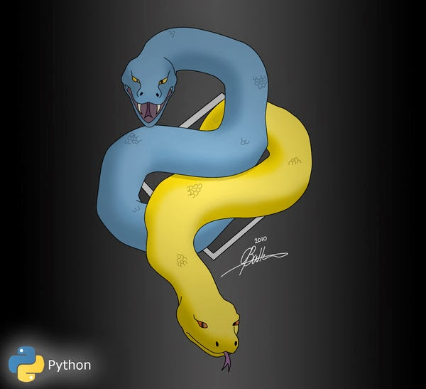

(c) zaper3095Interesting question appeared today on my job: Quoting from StackOverflow:
In Python 3:
class A(object): attr = SomeDescriptor() ... def somewhere(self): # need to check is type of self.attr is SomeDescriptor() desc = self.__class__.__dict__[attr_name] return isinstance(desc, SomeDescriptor)Is there better way to do it? I don’t like this
self.__class__.__dict__stuff
Shortly, the answer is NO. No other way to get descriptor object (preventing __get__ being invoked) than getting it from __dict__.
However, there are several workarounds ;)
1) Return self in __get__ if instance is None
Return self in __get__ method if instance is None (it will happen if you call getattr on class object like type(self)):
class SomeDescriptor():
def __get__(self, inst, instcls):
if inst is None:
# instance attribute accessed on class, return self
return self
return 4
class A():
attr = SomeDescriptor()
def somewhere(self):
attr_name = 'attr'
desc = getattr(type(self), attr_name)
# desc = self.__class__.__dict__[attr_name] # b.somewhere() would raise KeyError
return isinstance(desc, SomeDescriptor)
2) Set attribute on returned function
Second solution came from my colleague Maksym Panibratenko:
Since our descriptor is callable, and __get__ returns a function, we can assign an attribute on this function, and check in runtime whether the function has this attribute with hasattr():
class SomeDescriptor():
def __get__(self, inst, instcls):
def func():
pass
func.implemented = True
return func
class A():
attr = SomeDescriptor()
def somewhere(self):
attr_name = 'attr'
desc = getattr(self, attr_name)
return hasattr(desc, 'implemented')
Follow link to see full discussion: http://stackoverflow.com/questions/21629397/neat-way-to-get-descriptor-object
This post was migrated from the old blog antigluk.blogspot.com.